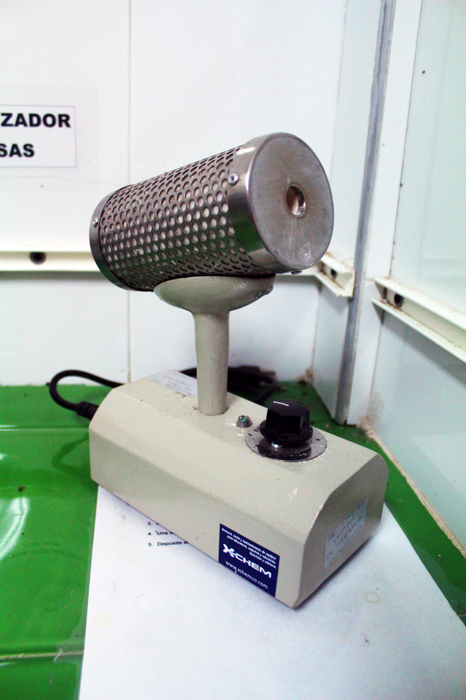

<!DOCTYPE>
<html lang="en" xml:lang="en">
<head>
	<meta charset="UTF-8">

	<meta name="description" content="Material virtual para el aprendizaje de los cultivos de tejidos vegetales">
    <meta name="author" content="Nestor Suat - Universidad de los Llanos">
    <meta name="viewport" content="width=device-width, initial-scale=1.0, user-scalable=no">
    <link rel="icon" href="public/favicon.ico">

    <title>CTVirtual</title>
	<link rel="stylesheet" type="text/css" href="public/css/app.css">
	<link rel="stylesheet" type="text/css" href="public/css/font-awesome.min.css">
	<link rel="stylesheet" type="text/css" href="public/css/bootstrap.min.css">
	<link rel="stylesheet" type="text/css" href="public/css/jquery.panorama.css" media="screen" />
	<link rel="stylesheet" type="text/css" href="public/css/font-awesome-4.4.0/css/font-awesome.css">
	<link href='https://fonts.googleapis.com/css?family=Source+Sans+Pro' rel='stylesheet' type='text/css'>
	<link rel="stylesheet" type="text/css"  href="public/css/avgrund.css">
	<link rel="stylesheet" type="text/css"  href="public/css/demo.css">

	<script type="text/javascript" src="public/js/bootstrap.js"></script>

	<script type="text/javascript" src="public/js/jquery.min.js"></script>
	<script type="text/javascript" src="public/js/jquery.panorama.js"></script>

	<script>

		$(document).ready(function(){
			$("img.advancedpanorama").panorama({
		        auto_start: 0,
				start_position: 850,
				viewport_width: screen.width,
				speed: 15000
		    });
		});
		function openFirstDialog() {
			Avgrund.show( "#modal-siembra" );
		}
		function openSecondDialog() {			
			Avgrund.show( "#modal-crecimiento" );
		}
		function openMicropipetasDialog() {
			Avgrund.show( "#micropipetas-popup" );
		}
		function openAgitadoraDialog() {
			Avgrund.show( "#agitadora-popup" );
		}
		function openBalanzaDialog(){
            Avgrund.show(  "#balanza-popup" );
        }
        function openStocksDialog(){
            Avgrund.show(  "#stocks-popup" );
        }
        function openPhDialog(){
            Avgrund.show(  "#phmetro-popup" );
        }
        function openAsasDialog() {
			Avgrund.show( "#asas-popup" );
		}
        function openEstereoDialog() {
			Avgrund.show( "#estereo-popup" );
		}
		function openAutoclaveDialog() {
			Avgrund.show( "#autoclave-popup" );
		}
        function openDestiladorDialog() {
			Avgrund.show( "#destilador-popup" );
		}
        function openAguaDialog() {
			Avgrund.show( "#agua-popup" );
		}
		function openIvernaderoDialog() {
			Avgrund.show( "#ivernadero-popup" );
		}
		function closeDialog() {
			Avgrund.hide();
		}

    </script>
	<script type="text/javascript" src="public/js/cvi_text_lib.js"></script>
	<script type="text/javascript" src="public/js/jquery.advanced-panorama.js"></script>
	<script type="text/javascript" src="public/js/jquery.flipv.js"></script>

	<script src="public/js/ie-emulation-modes-warning.js"></script>
</head>
<body>
	<aside id="modal-crecimiento" class="avgrund-popup">
        <h2 class="modal-title" style="margin-bottom: 1%"><div style="display: inline-block;margin-right:1%;">CTVirtual</div></h2>
        <div class="row">
        	<div style="position: relative;" class="col-md-9 col-lg-9 col-sm-7 col-xs-12">
        		<span style="position: absolute;z-index: 10;font-size: 1.5em;border-radius: 0;" class='label label-success'>CUARTO DE CRECIMIENTO</span>
        		
    		</div>
			<p class="col-md-3 col-lg-3 col-sm-5 col-xs-12" style="text-align: justify">Esta sección es para el desarrollo y diferenciación de las plantas. Posee unos estantes pintados de color blanco con icopores para evitar el crecimiento de agentes patógenos, un timer o temporizador para controlar el fotoperiodo, unas bombillas que brinden la intensidad lumínica adecuada para el creciiento y aire acondicionado para controlar la temperatura.</p>
		</div>
	 	<button class="pull-right" onclick="javascript:closeDialog();">Cerrar</button>
   	</aside>
   	<aside id="modal-siembra" class="avgrund-popup">
        <h2 class="modal-title" style="margin-bottom: 1%"><div style="display: inline-block;margin-right:1%;">CTVirtual</div></h2>
        <div class="row">
			<p class="col-md-7 col-lg-7 col-sm-6 col-xs-12" style="text-align: justify">
				Esta sección se realiza el proceso de micropropagación del material vegetal. Se requiere una cámara de flujo laminar y una cabina para guardar los materiales estériles de uso en el proceso de siembra.
				<br><br>
				La cámara de flujo laminar posee tres botones: uno para encender el flujo que limpia el aire a través de unos filtros y empuja para evitar entrada de partículas de polvo o microrganismos; el otro es la luz blanca; y el último, la luz ultravioleta; la conexión se hace para que sea fuera del cuarto de siembra.
				<br><br>
				No obstante, se sugiere suspender el botón que esta en la cámara de flujo laminar y generar un dispositivo que permita encenderla y apagarla desde fuera del cuarto con el fin de evitar posibles daños que puedan causar efectos cancerígenos, teratogénicos o de otro tipo.
			</p>
			<div style="position: relative;" class="col-md-5 col-lg-5 col-sm-6 col-xs-12">
        		<span style="position: absolute;z-index: 10;font-size: 1.5em;border-radius: 0;" class='label label-success'>CUARTO DE SIEMBRA</span>
        		
    		</div>
		</div>
	 	<button class="pull-right" onclick="javascript:closeDialog();">Cerrar</button>
   	</aside>
   	<aside id="micropipetas-popup" class="avgrund-popup">
   		<div class="row">
			<div class="col-md-8 col-lg-8 col-sm-12 col-xs-12 cont-modal-show">
				<h2><span class='label label-success des-modal-show'>MICROPIPETAS</span></h2>
				
			</div>
			<div class="col-md-4 col-lg-4 col-sm-12 col-xs-12 cont-modal-show">
				<p class="txt-parrafo">Se usa para hervir el agua y agitarla. Es el caso del stock de micronutrientes #5 al baño maría o en la dilución al Phytagel con agua hirviendo y su posterior agitación para que la sustancia se homogenice.</p>
				<p class="txt-parrafo">Para el funcionamiento de la plancha se coloca un aluminio y se enciende; si se necesita que mande el pulso electro magnético para agitar se mueve la perilla. Si no se cuenta con calentadora-agitadora se usa una estufa eléctrica.</p>
			</div>
		</div>
		<button class="pull-right" onclick="javascript:closeDialog();">Cerrar</button>
   	</aside>
   	<aside id="agitadora-popup" class="avgrund-popup">
   		<div class="row">
			<div class="col-md-4 col-lg-4 col-sm-12 col-xs-12 cont-modal-show">
				<p class="txt-parrafo">Las medidas en micras como en el caso de la aplicación de reguladores de crecimiento se utiliza la micropitpeta. Este instrumento permite medir en mircolitos () la cantidad de sustancia que se necesita para la aplicación en medio de cultivo de manera precisa y reduciendo el gasto del producto en uso.</p>
			</div>
			<div class="col-md-8 col-lg-8 col-sm-12 col-xs-12 cont-modal-show">
				<h2><span class='label label-success des-modal-show'>PLANCHA CALENTADORA-AGITADORA</span></h2>
				
			</div>
		</div>
		<button class="pull-right" onclick="javascript:closeDialog();">Cerrar</button>
   	</aside>
   	<aside id="balanza-popup" class="avgrund-popup" style="width:55% !important;left:22%;">
   		<div class="row">
		   	<div class="col-md-5 col-lg-5 col-sm-12 col-xs-12 cont-modal-show">
				<h2><span class='label label-success des-modal-show'>BALANZA ANALÍTICA</span></h2>
				
			</div>
			<div class="col-md-7 col-lg-7 col-sm-12 col-xs-12 cont-modal-show">
	        	<p class="txt-parrafo">Algunos de los reactivos que se van a pesar, en el caso de los micronutrientes, son menores a 10-4; por tanto, se necesita un equipo de precisión como la balanza analítica. Para el funcionamiento de la balanza analítica se prende el equipo, se coloca el papel o material que va evitar el contacto directo con el platillo de pesaje y se tarar (dejar en cero para no sumar el peso del material que se pone). Luego se abre un lado y se aplica la sustancia hasta cuando llegue al peso necesario y se cierra para determinar si es la medida correcta.</p>
	    	</div>
		</div>
        <button class="pull-right" onclick="javascript:closeDialog();">Cerrar</button>
    </aside>
    <aside id="stocks-popup" class="avgrund-popup" style="width:55% !important;left:22%;">
    	<div class="row">
    		<div class="col-md-12 col-lg-12 col-sm-12 col-xs-12 cont-modal-show">
				<h2><span class='label label-success des-modal-show'>Utencilios para preparación de Stocks</span></h2>
				
			</div>
    	</div>
        <button class="pull-right" onclick="javascript:closeDialog();">Cerrar</button>
    </aside>
    <aside id="phmetro-popup" class="avgrund-popup" style="width:55% !important;left:22%;">
    	<div class="row">
    		<div class="col-md-7 col-lg-7 col-sm-12 col-xs-12 cont-modal-show">
		        <p class="txt-parrafo">El pH metro permite determinar la medida exacta en que se encuentra una sustancia que va de 0 a 14, cuando es menor que 7 se puede decir que esta ácido, en 7 neutro y mayor básico. En el cultivo invitro el pH se sugiere que oscile entre 5,7 y 5,8 ligeramente ácido para que la planta pueda absorber idóneamente los nutrientes que requiere para su crecimiento.</p>
		        <p class="txt-parrafo">El electrodo (punta o lápiz) del pH metro debe estar sumergido en KCL 3M. Cada vez que se va a medir se estabiliza el pH con sustancia Buffer. Se hace el respectivo lavado antes y después de cada operación para optimizar su duración.</p>
	        </div>
		   	<div class="col-md-5 col-lg-5 col-sm-12 col-xs-12 cont-modal-show">
				<h2><span class='label label-success des-modal-show'>PH-METRO</span></h2>
				
			</div>
        </div>
        <button class="pull-right" onclick="javascript:closeDialog();">Cerrar</button>
    </aside>
    <aside id="asas-popup" class="avgrund-popup" style="width:55% !important;left:22%;">
    	<div class="row">
    		<div class="col-md-6 col-lg-6 col-sm-12 col-xs-12 cont-modal-show">
				<h2><span class='label label-success des-modal-show'>Esterilizador de Asas</span></h2>
				
    		</div>
    		<div class="col-md-6 col-lg-6 col-sm-12 col-xs-12">
				<p class="txt-parrafo">Cuenta con un elemento central libre de asbesto, que utiliza el calentamiento infrarrojo para producir 815°C. Estiriliza al instante (7 segundos) asas, instrumentos de borosilicato o metal, bocas de pipetas y demás material utilizado en el laboratorio. El elemento de calentamiento está protegido por una cámara de acero inoxidable perforada, para proteger al usuario contra un contacto accidental.</p>
    		</div>
        </div>
        <button class="pull-right" onclick="javascript:closeDialog();">Cerrar</button>
    </aside>
    <aside id="estereo-popup" class="avgrund-popup" style="width:55% !important;left:22%;">
    	<div class="row">
    		<div class="col-md-6 col-lg-6 col-sm-12 col-xs-12 cont-modal-show">
				<h2><span class='label label-success des-modal-show'>Estereo Microscopio</span></h2>
				
    		</div>
    		<div class="col-md-6 col-lg-6 col-sm-12 col-xs-12">
				<p class="txt-parrafo">El estéreo microscopio, o tambien conocido como lupa binocular, es un instrumento óptico que produce una imagen aumentada del objeto que se observa a través de ella. La lupa binocular forma una imagen de un tamaño aproximado de entre 20 y 40 veces mayor que el objeto que estamos observando. Este instrumento permite visualizar muestras opacas, tridimensionales y sin ningún tipo de preparación (minerales, pequeños, insectos, objetos pequeños, etc.)</p>
    		</div>
        </div>
        <button class="pull-right" onclick="javascript:closeDialog();">Cerrar</button>
    </aside>
	<aside id="autoclave-popup" class="avgrund-popup" style="width:55% !important;left:22%;">
		<div class="row">
    		<div class="col-md-6 col-lg-6 col-sm-12 col-xs-12 cont-modal-show">
				<h2><span class='label label-success des-modal-show'>AUTOCLAVE</span></h2>
				
    		</div>
    		<div class="col-md-6 col-lg-6 col-sm-12 col-xs-12">
				<p class="txt-parrafo">Este aparato también necesita una toma directa para el suministro de agua; sin embargo existen aparatos con aplicación manual.</p>
				<p class="txt-parrafo">Antes de encender la autoclave toca determinar los psi(20), la temperatura (121°C) y el tiempo (20 minutos). Se introduce el material, esperando que alumbre la hilera de bombillos que va de amarilla a verde y amarilla.</p>
				<p class="txt-parrafo">Luego oprime ON, dando por determinado el proceso al apagar (oprimir off), bajar la palanca de estirilización y sacar el material descontaminando (foto 5). Generalmente se esterilizan frascos contaminados con hongo, bacterias, entre otros fitopatógenos y, material de uso en cámara de flujo laminar como las aguas destiladas-estériles, cajas Petri, la herramienta, el papel kraf o medios de cultivo que se preparan para la siembra.</p>
			</div>
		</div>
        <button class="pull-right" onclick="javascript:closeDialog();">Cerrar</button>
    </aside>
    <aside id="destilador-popup" class="avgrund-popup" style="width:55% !important;left:22%;">
    	<div class="row">
    		<div class="col-md-6 col-lg-6 col-sm-12 col-xs-12 cont-modal-show">
				<h2><span class='label label-success des-modal-show'>DESTILADOR</span></h2>
				
    		</div>
    		<div class="col-md-6 col-lg-6 col-sm-12 col-xs-12">
				<p class="txt-parrafo">El destilador permite que el agua se evapore para luego obtenerla sin ningún tipo de mineral residual, aunque no estirilizada</p>
				<p class="txt-parrafo">Para su funcionamiento requiere que una de las mangueras se conecte a la fuente de agua, la otra al desagüe (agua que no se evapora) y la última a un recipiente de vidrio (Agua evaporada). Se debe mantener conectado a una toma eléctrica.</p>
			</div>
		</div>
        <button class="pull-right" onclick="javascript:closeDialog();">Cerrar</button>
    </aside>
    <aside id="agua-popup" class="avgrund-popup" style="width:27% !important;left:35%;">
    	<div class="row">
    		<div class="col-md-12 col-lg-12 col-sm-12 col-xs-12 cont-modal-show">
				<h2><span class='label label-success des-modal-show'>Envase con Agua Destilada</span></h2>
				
    		</div>
		</div>
        <button class="pull-right" onclick="javascript:closeDialog();">Cerrar</button>
    </aside>
	<aside id="ivernadero-popup" class="avgrund-popup" style="width:50% !important;left:25%;">
		<div class="row">
    		<div class="col-md-12 col-lg-12 col-sm-12 col-xs-12 cont-modal-show">
				<h2><span class='label label-success des-modal-show'>IVERNADERO</span></h2>
				
    		</div>
		</div>
        <button class="pull-right" onclick="javascript:closeDialog();">Cerrar</button>
    </aside>

	<section id="nav-container"></section>
	<section id="container"></section>

    <script type="text/javascript" src="public/js/avgrund.js"></script>
    <script src="public/app.js"></script>

</body>
</html>
